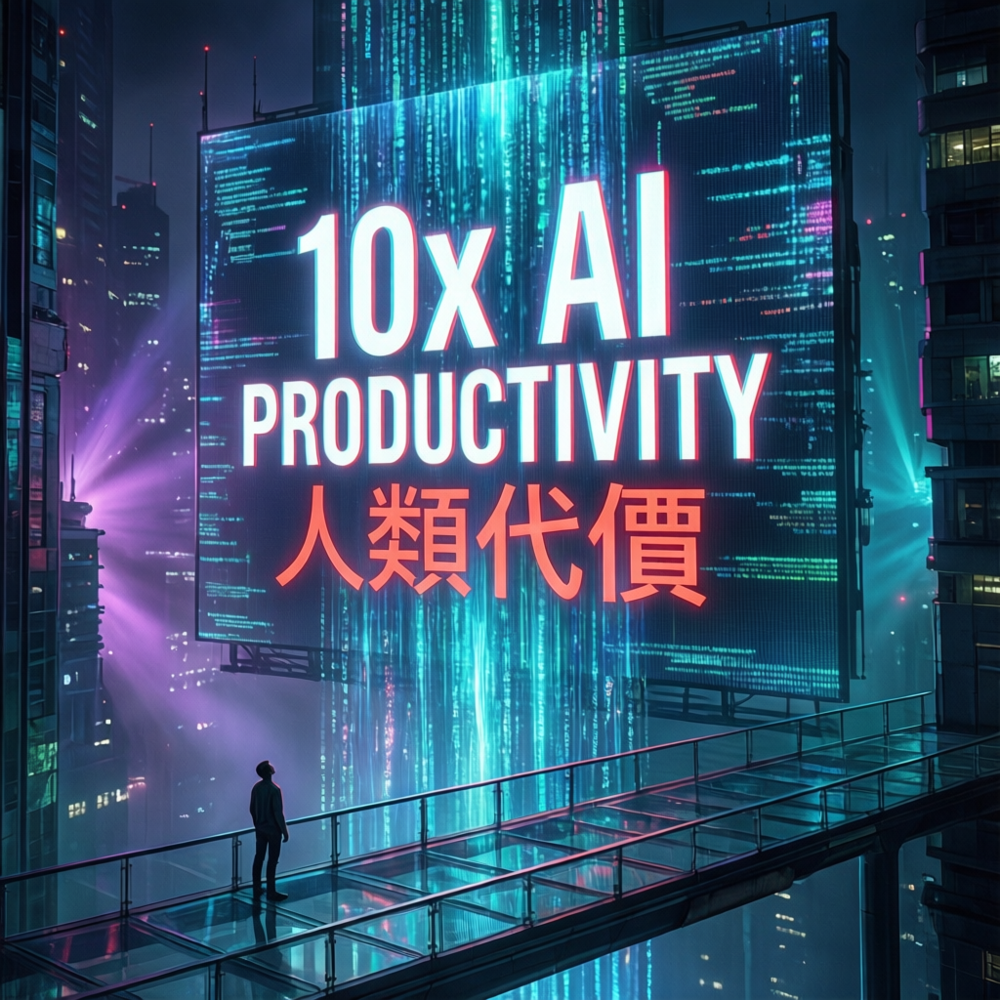

📰 AI News 專題報道

AI 生產力的隱性代價：當工程師大腦被機器速度追殺
當 AI 承諾十倍生產力，誰來承擔人類大腦的極限代價？一場關於工程師身心健康與產業現實的深度調查

當 AI 承諾十倍生產力，誰來承擔人類大腦的極限代價？一場關於工程師身心健康與產業現實的深度調查

本次報告揭示了一個被業界長期忽視的隱性危機：AI 工具雖然大幅提升程式碼產出速度，卻將認知負荷轉嫁至人類工程師身上。當機器以每秒數十億位元的速度運算時，人腦的意識處理能力僅能維持每秒約十位元——這道生物學瓶頸正成為無數開發者的職業夢魘。
所謂的「十倍生產力」並非減輕工作負擔，而是創造了一種新型態的勞動異化。工程師被迫以有限的神經資源，處理無限擴張的機器產出，最終導致身心系統的全面崩潰。
「這個行業稱之為『10 倍生產力』。我稱之為它的本質：一個以機器速度產生輸出、卻用人類生物速度被迫處理一切的系統。」
— TECHTRENCHES 作者親身經歷Upwork Research Institute 調查顯示，使用 AI 的員工中，77% 表示 AI 增加了而非減少了他們的工作量。
AI 生產力最高的用戶群體，倦怠率高達 88%，自願離職人數是其他人的兩倍——你 dashboard 上表現最好的人，正是最接近離開的人。
人類大腦每秒只能處理約 10 bits 的意識分析思維，但感官系統每秒攝取約 10 億 bits。這個 9 個數量級的落差永遠無法消除。
AI 生成代碼平均每個 PR 比人類編寫多 1.7 倍 Bug，邏輯缺陷增加 75%，性能問題多 8 倍。每一行程式碼都需要人類審查。
| 指標 | 傳統時代 | AI 時代 | 變化 |
|---|---|---|---|
| PR 缺陷檢出率（<100行） | 87% | 87% | 持平 |
| PR 缺陷檢出率（>1000行） | 28% | 28% | 持平 |
| 每開發者程式碼行數/月 | 4,450 | 7,839 | +76% |
| 合併 PR 數量 | 基準 | +98% | 大幅增加 |
| 組織交付量 | 基準 | 無顯著變化 | 0% 改善 |
| 資深工程師交付信心 | — | 22% | 極低 |
| 電腦視覺症候群盛行率 | 一般 | 74% | 高發 |
UC Berkeley 研究團隊在 200 人科技公司進行 8 個月田野調查，訪談超過 40 位從業人員，發現三種「工作量滲透」機制：
Faros AI 分析超過一萬名開發者的數據發現：雖然 AI 協助下合併的 Pull Request 增加 98%，但公司層面的整體交付量與品質，竟未出現任何可衡量的組織級改善。Sonar 首席執行官更警告，AI 模型日益擅長迴避明顯錯誤，卻將結構性缺陷的佔比推升至 90% 以上——工程師正被導入錯誤的安全感。
長期處於此種工作模式，工程師的身體正在發出警訊：
研究指出，AI 實際上將對資深工程判斷的需求擴大了 76-98%。每一個 AI 生成的 Pull Request，都需要具備以下能力的人類進行審查：能夠發現機器錯誤、能在第 847 行識別結構缺陷、能夠追蹤橫跨三個服務的下游邏輯錯誤。而具備此等能力者的供給量，並未隨之增加。
Qodo 報告顯示，資深工程師對 AI 生成程式碼的交付信心最低，僅 22%，卻因職責要求必須進行批判性思考，成為組織中認知成本的最終吸收者。
當產業狂熱追逐十倍生產力時，或許更該正視那個無法升級的人類大腦——作者在文末所言：「如果你是一位正在身體力行感受這些症狀的資深工程師，你不孤單，也不軟弱。」
「你 dashboard 上表現最好的人，正是最接近轉身離開的人。」
— Upwork Research Institute 發現